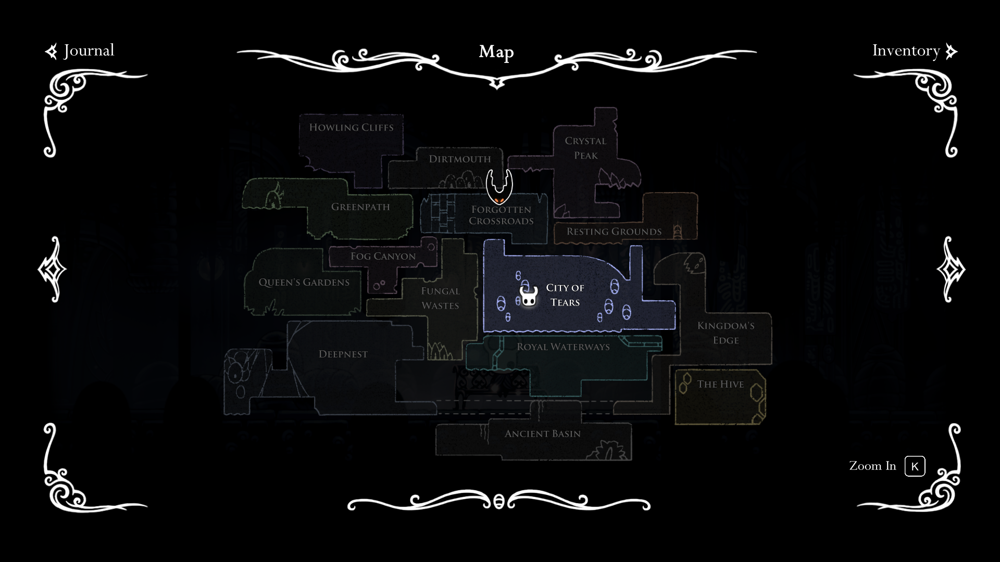

For the one who don't know what "indie" or" Metroidvania" is, "indie" mean independent - the game is developed by individual/small team instead of a big studio, and "Metroidvania" is a genre of game that focus on having an open world with lots of exploration.
Well, I will not provide more information than that. The good part of this game is unveiling Hallownest mysteries by yourself. There is very few hand-holding in Hollow Knight, to the point that half of your playtime will be finding your way. And look how big the map is!
The map the game give you is not very helpful. But to be honest, constantly getting lost is the best part of this game. The world is so detailed that getting lost usually means you would find something interesting in a corner of the world.